II. Steps
1. One SSH Public key
This step creates a new SSH key pair.
Purpose: After deployment successfully finished, you can use this private key to SSH into VMs.
Note: If you want to use an already exist key pair, you can skip this step.
Open CMD on windows (Window button + R → “cmd”):
This document using OpenSSH to generate key pairs (you can use any tool as you like)
1. Run command: ssh-keygen
2. Enter file name
3. Enter your passphrase or skip it by Enter
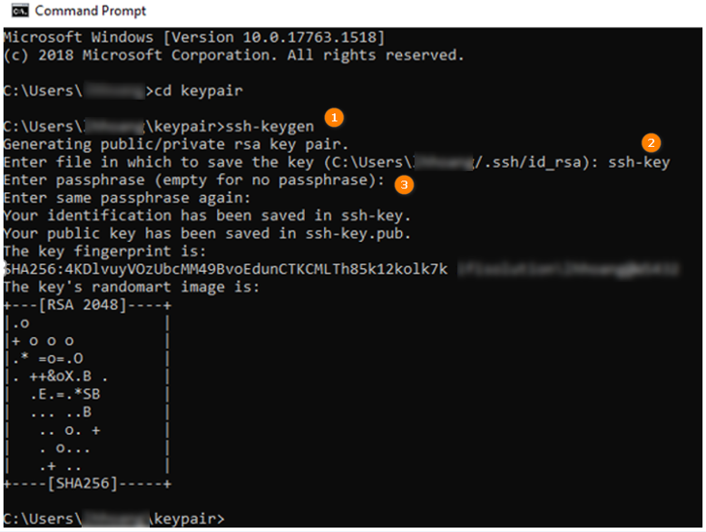
Key pair will be created in your folder
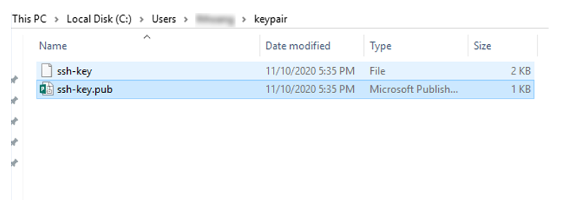
Open ssh-key.pub file
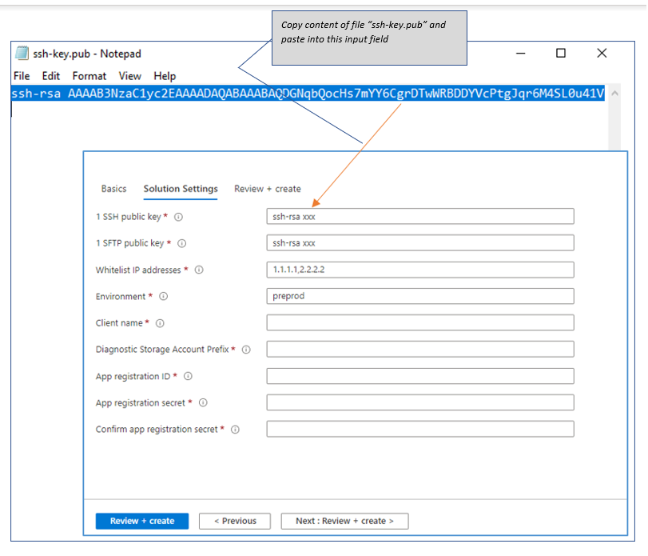
2. SFTP public key
This step creates a new SSH key pair.
Purpose: After deployment successfully finished, you can use the private key to access into SFTP module.
Note: If you want to use an already exist key pair, you can skip this step.
Open CMD on windows:
1. Run command: ssh-keygen
2. Enter file name
3. Enter your passphrase or skip it by Enter
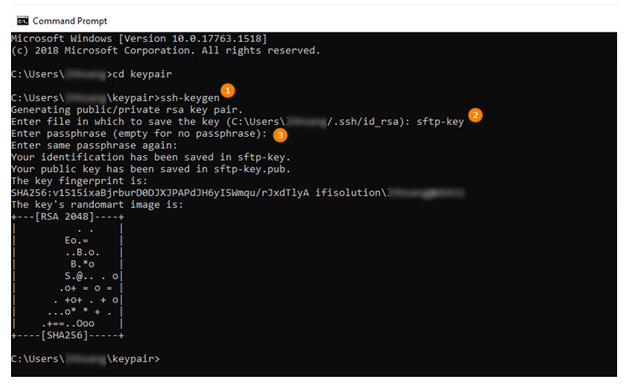
Key pair will be created in your folder
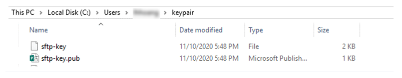
Open sftp-key.pub file
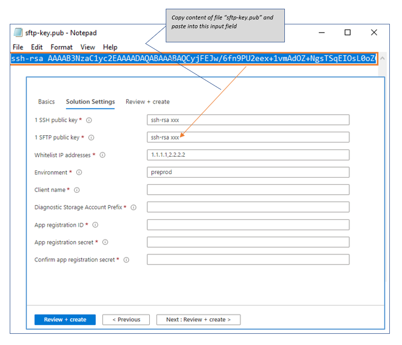
3. List your Whitelist IP addresses
Only IPs from this Whitelist can access to your resources.
You can check from www.whatismyip.com.
If you want to input more than one IP, separated them by comma - not include space, Ex. “11.11.11.11,22.22.22.22,33.33.33.33”
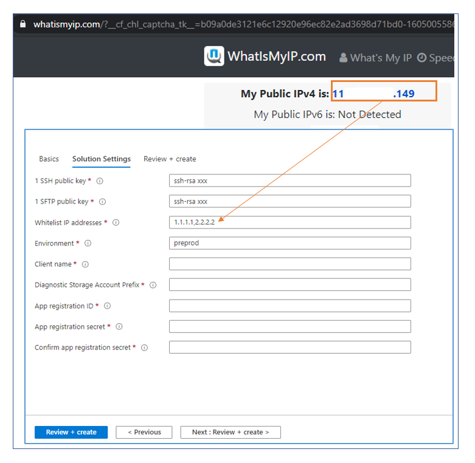
4. Environment
This is environment name in short for all resources, something like “prod” (for production) or “test” (for testing) or “dev” (for develop), etc...
Contraints: Lowercase letters and numbers only, length in range [3-7] letters.
5. Client name
This is your company/organization in short.
The client name combines with environment make your resources unique among subscriptions. This field should not include some word that reserved by Microsoft (refer document link: https://docs.microsoft.com/en-us/azure/azure-resource-manager/templates/error-reserved-resource-name) (ex: login|microsoft|windows|xbox,..etc)
Constraints: Lowercase letters and numbers only, length in range [3-10] letters.
6. Diagnostic Storage Account Prefix
This is storage account name that will store diagnostic information of your VMs.
Constraints: Lowercase letters and numbers only, length in range [3-10] letters.
7. App registration ID
This ID use for NiFi configuration, make NiFi connect to Data Lake Storage
If you already have your own App registration, skip this step.
If you don’t have any App registration, just create one: From Azure Portal -> Go to "Azure Active Directory" -> "App registrations" -> "New registration"
/!\ The name "NIFI-MARKETPLACE-APPS" just an example name, you can use any name as you like.
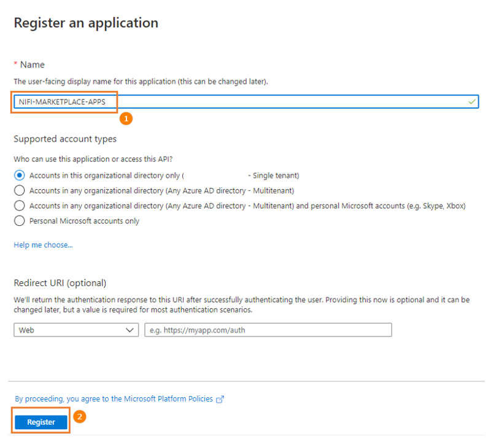
Go to Overview, get Client ID:
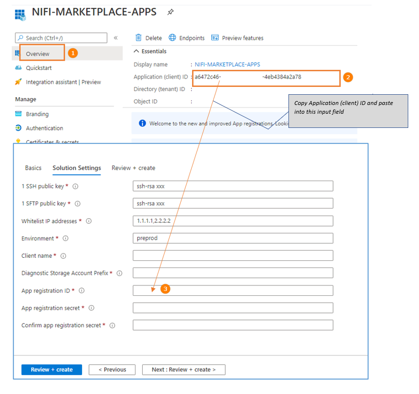
Go to Certificate & Secret, create new one.
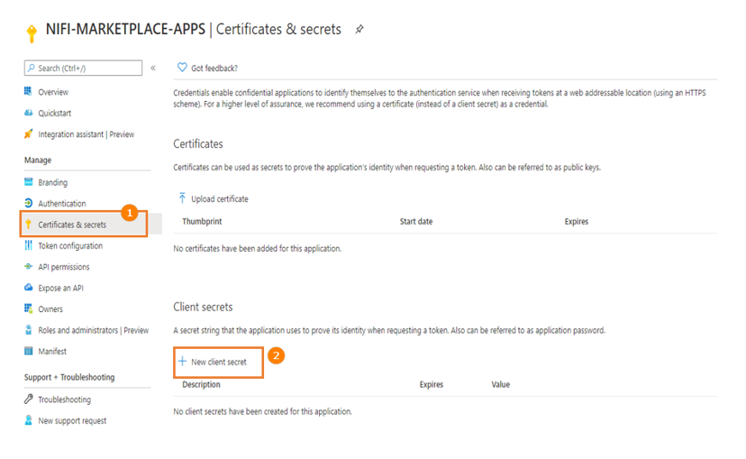
/!\ The name "nifi-config-secret" just an example name, you can use any name as you like
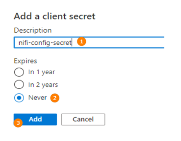
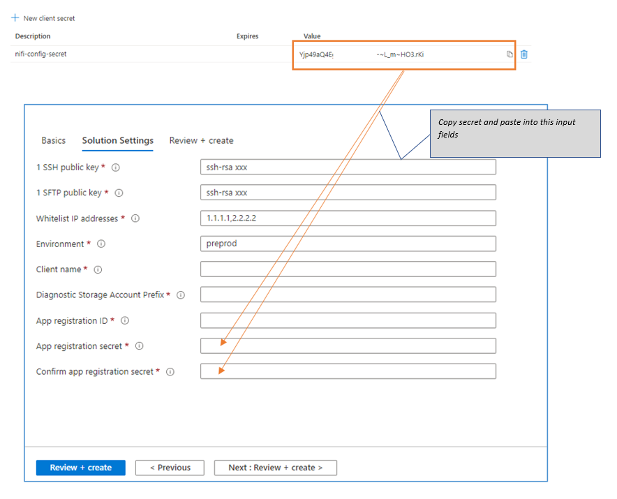